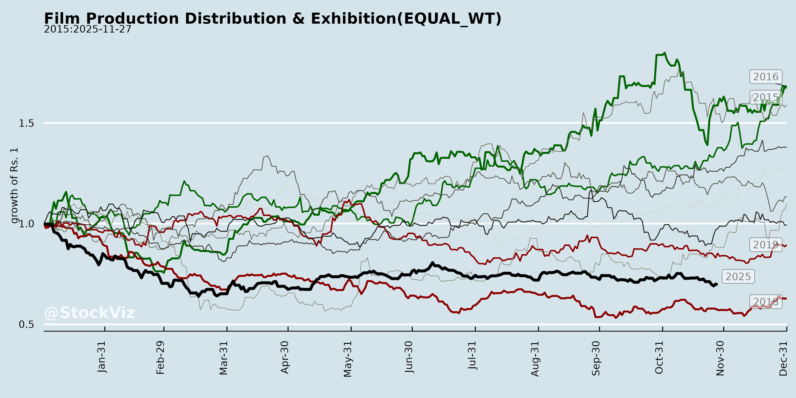
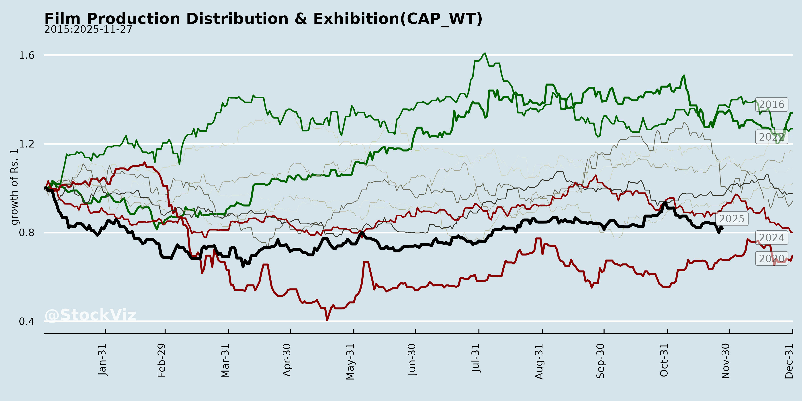
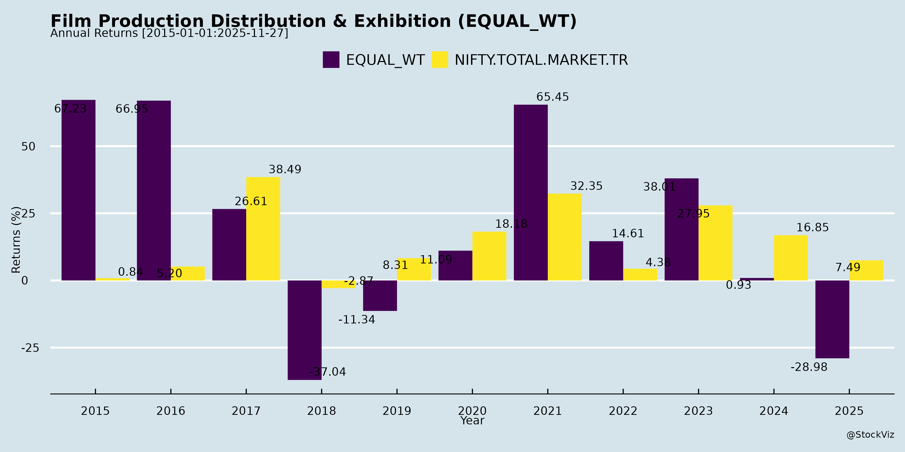
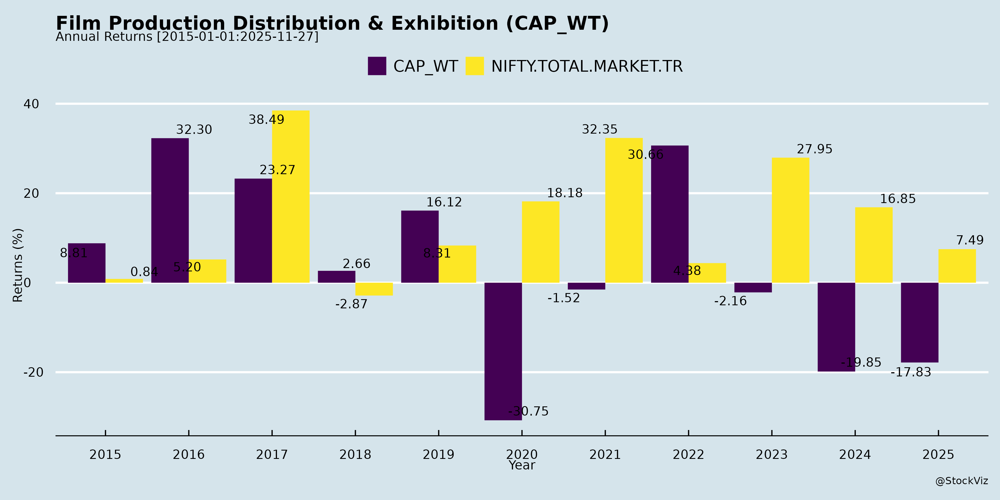
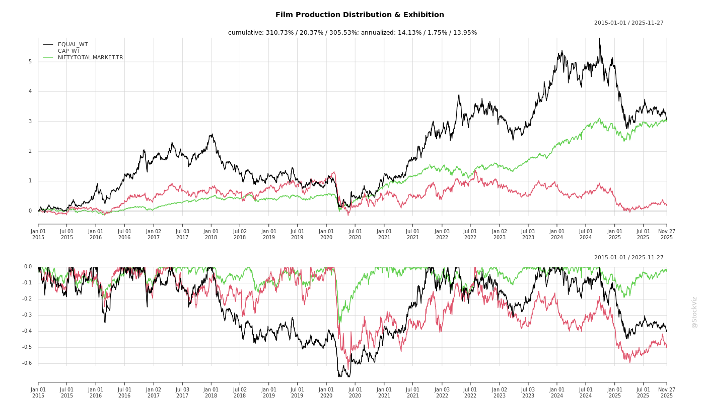
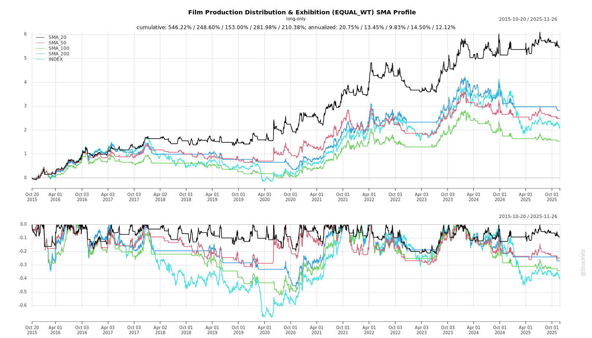
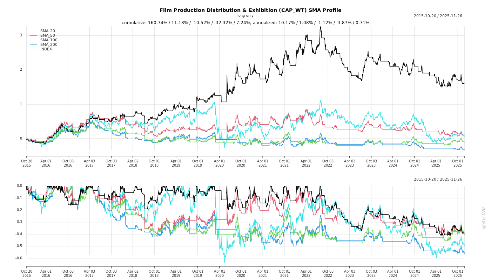
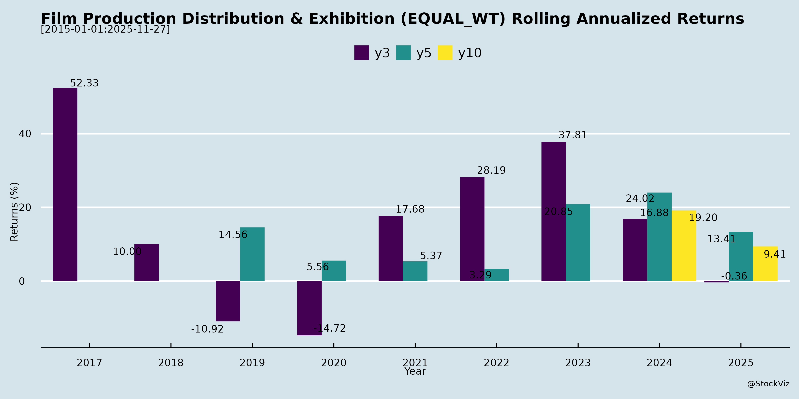
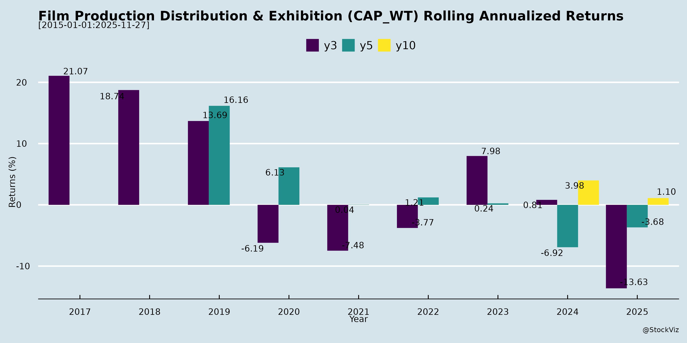

Annual Returns




Cumulative Returns and Drawdowns

SMA Scenarios


Current Distance from SMA
Rolling Returns


EBIT (% of Industry Total)
Revenue (% of Industry Total)
AI Summaries
Analyst
asof: 2025-11-27
Indian Film Production, Distribution & Exhibition Sector Analysis
Based on announcements from Cineline India, PVR INOX, and UFO Moviez India (Q2 & H1 FY26 Earnings Transcript)
The documents highlight operational updates and insights from key players in exhibition (Cineline, PVR INOX), digital cinema distribution/advertising (UFO Moviez). UFO’s transcript provides the deepest view into industry dynamics, showing recovery momentum amid challenges. Overall, the sector is rebounding post-COVID with stable revenues but content-dependent growth.
Headwinds
- Post-COVID Hangover & Content Volatility: Footfalls remain below pre-COVID peaks without mega-blockbusters (e.g., no “Pushpa 2” equivalent in Q3 FY26; muted Diwali). Films like “Baaghi 4” underperformed, leading to selective traction.
- Shift to OTT: Temporary cannibalization of cinema attendance, delaying full recovery.
- Government Ad Spend Decline: Share dropped from ~53% (FY19) to minimal (central DAVP pie shrunk); state ads persist but unpredictable. Led to yield erosion (corporate rates ~10-12% below pre-COVID at ₹55-60/min vs. ₹60-64).
- Small-Town Exhibition Challenges: Pilot projects (e.g., UFO’s Nova Cinemas in <50k pop. towns) underperformed due to low footfalls, licensing issues, and poor content fit. Expansion beyond 1,300 cities stalled.
- Rescheduling & Uncertainty: PVR INOX deferred investor meets; UFO notes exigencies in schedules.
Tailwinds
- Content Slate Recovery: Q2 FY26 saw strong performers (“Coolie”, “War 2”, “Jolly LLB 3”); Q3/H2 pipeline robust (“Kantara Ch.1”, “De De Pyaar De 2”, “Avatar: Fire and Ash”).
- Ad Revenue Rebound: Corporate ads surged (from near-zero post-COVID), providing stability. UFO’s ad footprint at 3,795 screens (2,279 multiplex, 1,516 single); minutes rising toward FY19’s 5.4.
- Financial Resilience: UFO H1 FY26: Revenue +15% YoY (₹2,203 mn), EBITDA +145% (₹411 mn), PAT swing to ₹141 mn profit. Gross margins up to 55% (ad leverage: ~65% incremental to PBT). Strong liquidity (₹1,348 mn cash).
- Synergies & Efficiency: UFO’s Scrabble Digital merger yielded ~90-95% cost benefits; fixed MG contracts capture ad upside.
- Investor Engagement: Scheduled meets (Cineline) signal confidence.
Growth Prospects
- Advertising Monetization: Core upside; volume to 5.4+ mins (next 2 qtrs), yield revival via blockbusters/corporate (target pre-COVID levels). Potential 2x volume + 2x pricing = 4x revenue.
- Digital Cinema Expansion: Near-monopoly in delivery (UFO); untapped smaller towns (1,300+ cities) once viable. Product sales growth (projectors/servers from Christie/Panasonic/Dolby).
- Theatrical/Distribution Stability: 462 releases in Q2 (stable YoY); exhibitor/distributor revenues steady, with Capex (₹40-45 cr) maintaining network.
- Diversification: Rural outreach (Caravan Talkies rebound via govt/corporate); exhibition pilots scalable to 1-lakh pop. towns.
- Outlook: Q3+ positive; industry nearing pre-COVID profitability (2018-19). FY26 revenue/EBITDA sustainable at current levels, with 20% margins if ad/content holds.
Key Risks
- Content Dependency: Blockbuster absence could mute footfalls/ad demand (e.g., Q3 base effect from prior Pushpa 2).
- Govt Policy Volatility: Further ad cuts or delays in state/central spending.
- Competition: 4-5 players in digital delivery; pricing power limited (sweet spot to avoid curbing releases).
- Economic/External: Consumer sentiment, monsoons (impacts rural/open-air), contract renewals (MG hikes uncertain).
- Capex & Sunset Revenues: Maintenance-focused (no aggressive adds); permanent VPA loss (~₹35 cr/qtr pre-Sunset).
- Execution: Small-town viability unproven; over-reliance on ad vertical for delta profitability.
Summary: Sector in inflection—tailwinds from content/ad recovery outweigh headwinds, driving UFO-like growth (15%+ rev, 20% margins). Prospects hinge on blockbusters/ad volume; risks mitigated by cash buffers and diversification. Positive for FY26 H2, targeting pre-COVID normalcy in 2-3 years.
Financial
asof: 2025-11-27
Analysis of Indian Film Production, Distribution & Exhibition Sector
Based on the provided financial results from key players (Cineline India/Movie Max, Mukta Arts, Pritish Nandy Communications/PNC, PVR INOX, Tips Films, and UFO Moviez) for Q3/Nine Months FY25 (ended Dec 2024), here’s a sector-level summary. Data reflects exhibition (PVR INOX, Cineline, Mukta), production/distribution (PNC, Tips, Mukta, UFO). Overall, exhibition shows resilience amid content volatility; production remains cyclical with losses.
Headwinds (Challenges)
- Persistent Losses & Margin Pressure: Nine-month consolidated losses dominant (Cineline: ₹653 Cr standalone PBT loss; PNC: ₹79 Cr; Tips: ₹122 Cr PBT; Mukta: Consolidated losses ~₹1,693 Cr FY25). High costs (movie exhibition/content: 30-60% of revenue; finance costs up 10-20% YoY) erode margins (e.g., PVR INOX operating margin ~30%).
- Content Volatility: Production hit-or-miss (Tips revenue drop 78% QoQ; PNC Q3 revenue ₹303 L, loss ₹49 L). Mukta reports negative EBITDA in exhibition/education segments.
- High Debt & Finance Costs: Debt-equity ratios 0.2-0.3 (PVR INOX/Cineline); finance costs ₹2-3 Cr quarterly (PVR INOX ₹2 Cr/Q). Mukta has ₹5.5 Cr borrowings.
- Legal/Operational Issues: Mukta’s ongoing High Court litigation (Whistling Woods: ₹84 Cr exposure, qualified audit opinion); Cineline classifying subsidiary as “held for sale.”
- Slow Recovery: Revenues flat/slow in production (Tips FY25 nine-month ₹137 Cr vs. FY24 ₹175 Cr); exhibition impacted by content slate.
Tailwinds (Positives)
- Exhibition Resilience: Strong revenue growth (PVR INOX: ₹17k Cr Q3, up ~11% QoQ; Cineline: ₹6.3k Cr Q3, up 14% QoQ). Occupancy-driven (PVR INOX EBITDA margin ~30-34%).
- Diversification: Mukta standalone profit ₹780 L FY25 (software/equipment); PNC wellness segment emerging.
- Post-COVID Bounce: PVR INOX/Cineline note diminishing pandemic impact; Q3 profits (PVR INOX ₹359 Cr consolidated PAT).
- Fundraising: Cineline allotted warrants (₹45 Cr); Mukta positive standalone net worth ₹19.5k Cr.
- XBRL/Compliance Fixes: UFO clarifies presentation (EBITDA focus aligns with Ind AS Schedule III).
Growth Prospects
- Exhibition Expansion: PVR INOX (1,500+ screens) poised for 10-15% revenue CAGR via premium formats/food courts (new JV Devyani PVR INOX). Cineline revenue +18% nine-month YoY.
- Digital/Content Shift: UFO/PNC leverage streaming; Tips/Mukta theatrical + OTT (e.g., Mukta theatrical ₹10k Cr FY25).
- M&A/Fundraise: Cineline’s asset sale (R&H Spaces) for deleveraging; warrants signal equity infusion.
- Sector Tailwinds: Hollywood/Regional content slate strong (Q4 FY25 blockbusters expected); 2025 GDP growth supports discretionary spend (cinema ~₹15k-20k Cr market).
- Projections: Exhibition 12-15% CAGR to FY27 (PVR INOX guidance); production tied to 20-25% box office recovery.
Key Risks
- Content Dependency: 70-80% revenue from hits (Tips/PNC losses on flops); slate delays (Cineline Q3 EBITDA flat).
- Debt Servicing: High leverage (PVR INOX DSCR 3x but rising rates); Mukta’s ₹591 Cr MFSCDC claim unresolved (audit qualification).
- Regulatory/Litigation: Mukta’s sub-judice land lease (₹113 Cr paid); Cineline discontinued ops impairment risk.
- Macro/Competition: OTT erosion (10-20% market share); inflation on F&B/power (Cineline 20-30% costs).
- Audit/Recoverability: Mukta qualified opinion (₹84 Cr WWIL exposure); Tips/PNC advances (₹3-5 Cr) unprovisioned.
- Cyclicality: Q4 heavy (80% annual revenue); forex/volatility in imports (UFO).
Overall Outlook: Exhibition stable (PVR INOX leader), production volatile. Sector FY26 growth ~15% on content pipeline, but risks from debt/litigation persist. Monitor Q4 for annual turnaround.
General
asof: 2025-11-27
Summary Analysis: Indian Film Exhibition Sector (Production, Distribution & Exhibition)
Based on the provided documents from key players like Cineline India Limited (exhibition-focused), PVR INOX (leading multiplex chain), UFO Moviez (digital distribution/exhibition enabler), Mukta Arts (production/distribution/exhibition), and Pritish Nandy Communications (production/media), the sector shows resilient recovery and strategic pivots post-COVID. Exhibition dominates the insights, with tailwinds from premiumization and capital efficiency outweighing headwinds like content volatility. Production/distribution remains content-driven with a robust pipeline, but exhibition’s low-capex expansion signals high growth potential. Overall FY25-FY26 metrics indicate 20-30% YoY revenue/EBITDA growth for players like Cineline.
Tailwinds (Positive Drivers)
- Debt Reduction & Financial Health: Cineline became debt-free post INR 270 Cr hotel sale (debt repaid INR 228 Cr), saving INR 22 Cr annual interest. Enables free cash flow for expansion.
- Capital-Light Expansion Models: Shift to revenue-share/FOCO/asset-light (e.g., PVR INOX’s new 6-screen Delhi multiplex; Cineline’s 77 screens added since FY22). Reduces capex, enhances efficiency (owned/variable/fixed rent mix).
- Premiumization & Realization Growth: Rising ATP (FY23: INR 182 → FY25: INR 240, +32%), SPH (INR 65 → 88, +35%), admits (+81% YoY FY25). Luxury formats (recliners, Max Recliner Club, 4K/Dolby) drive 2x revenue/4x EBITDA since MovieMAX launch.
- Content Diversification & Pipeline: Reduced tentpole reliance (H1 FY26: mid-scale films 48% GBOC vs. 10% prior). Strong Q3-Q4 FY26 slate (e.g., Kantara 2, Avatar 3, Border 2, Prabhas films) boosts GBOC (Cineline: 3x market share rise to 4.15%).
- Operational Scale: Cineline: 79 screens/19 cinemas/17 cities/17.5k seats (up 77 screens); PVR INOX: 1,767 screens. Efficiencies via rent renegotiation, marketing (GST pass-through, promotions).
- Brand Momentum: Awards (e.g., Cineline: Most Admired Retailer/Most Impactful Brand); F&B innovations (gourmet menus, 24/7 service).
Headwinds (Challenges)
- Content Volatility: GBOC tied to hits (e.g., Cineline’s Q2 FY26 topper “Saiyaara” at INR 7.7 Cr); flops/misses hurt (e.g., H1 FY26 tentpole drop to 19% GBOC share).
- Regulatory/Compliance Pressures: Fines (Mukta Arts: INR 1.73L each BSE/NSE for Reg 17/19 non-compliance; waiver rejected).
- Cost Pressures: Rentals (Cineline Q2 FY26: INR 868L pre-IndAS), operating expenses (up with expansion). IndAS 116 impacts EBITDA visibility.
- Competition & Saturation: Intense rivalry (PVR INOX leads, but regional players like Cineline expanding). OTT piracy/streaming erodes theatrical share.
- Macro Sensitivity: Discretionary spending vulnerable to economic slowdowns/inflation.
Growth Prospects
- Screen Additions: Cineline: 5 screens by Dec 2025 (Bareilly/Chennai); PVR INOX/FOCO scaling. Targets: Sustainable FCF → 100+ screens via partnerships.
- Market Share Gains: Cineline: GBOC INR 65 Cr (FY23) → 162 Cr (FY25, +149%); highest admits/screen. National footprint (13 states).
- Revenue Mix Optimization: Box office + F&B (Q2 FY26: Cineline net F&B INR 1,804L, +16%); premium screens (Luxe/PXL) at 20-30% higher yields.
- FY26 Outlook: H1 FY26: +14-31% YoY in key metrics (revenue INR 11,125L, EBITDA INR 1,336L pre-IndAS). Q2: +14% revenue (INR 6,426L), Cash PAT +78%.
- Strategic Shifts: Exhibition pivot (UFO divests Mukta stake for focus); production slate (12+ biggies Q3-Q4 FY26) supports 15-20% industry GBOC growth.
- Long-Term: Urbanization, Gen Z demand for experiential cinema (gaming/lifestyle integration per PVR INOX).
Key Risks
| Content/Box Office |
High (50-70% revenue dependency); flops (e.g., low-scale films 33% GBOC) amplify volatility. |
Diversified slate; data-driven curation. |
| Execution/Expansion |
Capex overruns/delays in asset-light; integration risks (e.g., UFO-Mukta divestment). |
Partnerships/FOCO; FCF generation. |
| Regulatory |
SEBI fines/non-compliance (Mukta precedent); disclosure delays. |
Compliance focus; timely filings. |
| Economic/External |
Inflation, slowdowns cut footfalls; OTT competition/piracy. |
Premium pricing; hybrid models. |
| Operational |
Rent hikes, manpower/F&B costs; screen underutilization. |
Rent renegotiation; efficiency metrics. |
| Financial |
Residual debt (though low); forex/fuel for digital distro (UFO). |
Debt-free status (Cineline); cash PAT growth. |
Overall Outlook: Bullish with 15-25% CAGR potential through FY27, driven by capex efficiency (tailwinds > headwinds). Exhibition leads (80% insights), buoyed by content revival; production/distribution supportive but cyclical. Monitor Q3 FY26 GBOC for tentpole validation. Investors: Favor debt-light scalers like Cineline/PVR INOX.
Investor
asof: 2025-11-27
Summary Analysis: Indian Film Production, Distribution & Exhibition Sector
Based on the provided announcements from Cineline India Limited (investor meets), PVR INOX Limited (meeting rescheduling), and UFO Moviez India Limited’s Q2 & H1 FY26 Earnings Transcript (digital cinema, in-cinema ads, distribution), the sector shows signs of post-COVID recovery with steady theatrical momentum but persistent challenges in advertising and footfalls. UFO’s results (revenue ₹1,113 Mn in Q2 FY26, up 15% YoY; EBITDA ₹218 Mn, up 2x; PAT ₹75 Mn vs loss) reflect broader trends. Investor engagement (e.g., analyst meets) indicates ongoing scrutiny amid volatile content flows.
Headwinds (Challenges)
- Post-COVID Hangover: Industry still recovering; footfalls below pre-COVID peaks (e.g., FY19 ad minutes at 5.4 vs. current 4.5). Lack of mega-blockbusters limits disproportionate demand; Q3 FY26 muted due to weak Diwali (vs. prior Pushpa 2 boost).
- Advertising Dependency Shift: Central govt (DAVP) ad spend “shrunk dramatically” (from ~53-60% mix pre-COVID to minimal); state govt variable. Corporate yields 10-12% lower (₹55-60/min vs. ₹60-64 pre-COVID).
- Content Volatility: Mixed slate outcomes (e.g., “Baaghi 4”, “The Bengal Files” underperformed); 462 releases in Q2 but selective traction.
- Small-Town Expansion Hurdles: Pilot exhibitions (e.g., UFO’s Nova Cinema in <50K pop towns) show low traction; digital adoption in 1,300+ cities stalled by poor viability.
- Operational Pressures: Rescheduling of investor meets (PVR INOX) signals exigencies; variable segments like Caravan Talkies (monsoon-hit).
Tailwinds (Positive Factors)
- Revenue Momentum: UFO H1 FY26 revenue ₹2,203 Mn (+15% YoY), EBITDA ₹411 Mn (+145% YoY), PAT ₹141 Mn (vs. loss). Ad revenue robust; gross margins up to 55% (from 51.5%) due to high fixed-cost leverage (65% ad incremental to PBT).
- Content Diversity & Pipeline: Steady Q2 footfalls from multi-language hits (e.g., “Coolie”, “War 2”, “Jolly LLB 3”); Q3+ upbeat with “Kantara 2”, “De De Pyaar De 2”, “Avatar: Fire and Ash”.
- Ad Rebound: Corporate ads filling govt gap (consistent flow); network at 3,795 screens (2,279 multiplex, 1,516 single). Minutes sold rising steadily.
- Financial Health: Net cash ₹606 Mn; synergies from mergers (e.g., Scrabble Digital) realized (~90-95% cost savings already).
- Investor Interest: Scheduled/proactive meets (Cineline, PVR INOX) show engagement.
Growth Prospects
- Advertising Upside (Primary Driver): Near-term: Volume back to FY19 levels (5.4 min) in 2 quarters via blockbusters; yield revival with content. Long-term: 2x volume + pricing = 4x revenue potential. Corporate reliability reduces govt volatility.
- Theatrical/Distribution Stability: Exhibitor/distributor revenues steady; product sales (projectors/servers from Christie/Dolby/Panasonic) to expand with new lines (sound). Capex ₹40-45 Cr FY26 for maintenance/new screens.
- Network Expansion: Post-recovery focus on smaller towns (Tier 3+); monopoly-like position in digital delivery but “sweet spot” pricing sustains 100 Cr+ revenues.
- Overall Outlook: FY26 growth if content sustains (20% EBITDA margins viable barring Q3 base); industry nearing pre-COVID profitability by FY27.
| Revenue (₹ Mn) |
1,113 |
968 |
2,203 |
1,913 |
| EBITDA (₹ Mn) |
218 |
102 |
411 |
168 |
| PAT (₹ Mn) |
75 |
-9 |
141 |
-50 |
Key Risks
- Content & Footfall Dependency: High reliance on hits; flops/underperformers drag occupancies (e.g., OTT shift lingering).
- Govt Ad Policy: Unpredictable central spend; pie shrinkage could persist.
- Competition: 4-5 players in digital cinema; pricing hikes counterproductive (exhibitor/distributor pushback).
- Contractual/Operational: MG renewals tied to footfalls; Capex for ageing equipment (~₹40-45 Cr FY26).
- Macro/Exogenous: Economic slowdowns, monsoons (Caravan), political factors (govt ads), or content droughts (e.g., no Pushpa-scale releases).
- Execution: Small-town pilots failing; over-dependency on ads for margins.
Overall Sector View: Moderately positive with recovery tailwinds outweighing headwinds short-term, but content risk looms large. Growth hinges on blockbusters and ad yield revival; monitor Q3 for sustained momentum. UFO exemplifies resilience, but exhibition peers (PVR/Cineline) imply cautious investor sentiment via meet rescheduling.
Press Release
asof: 2025-11-27
Summary Analysis: Indian Film Production, Distribution & Exhibition Sector (Based on Q1-Q2/H1 FY26 Results)
The sector exhibits strong recovery momentum driven by consistent content performance, footfall growth, and operational efficiencies, as evidenced by positive results from key players like Cineline India (exhibition), PVR INOX (exhibition), UFO Moviez (distribution/advertising), Mukta Arts (exhibition/education), and PNC (production). Revenue growth averages 15-23% YoY across exhibition and advertising, with EBITDA surges (e.g., UFO +113% Q2). However, pockets of losses and external disruptions persist.
Tailwinds (Positive Drivers)
- Content Strength & Box Office Revival: Steady slate across Hindi (e.g., Saiyaara, War 2, Jolly LLB 3), Hollywood (Avatar 3, Mission Impossible), and regional (Kantara Chapter 1, Coolie). 10+ films crossed ₹100cr in PVR Q1; sleeper hits and franchises boosted collections +10-38% YoY.
- Operational Metrics Improving: Admissions +8-12% (e.g., Cineline 19.9L Q2, PVR 34mn Q1); ATP +6-8% (₹230-254); SPH +6-12% (₹95-148, record highs); F&B +16-22%; Ad revenues +17-37% (UFO +37%).
- Financial Discipline: Debt reduction (Cineline debt-free post-₹270cr hotel sale; PVR net debt -38% since merger); annual savings ~₹22cr in interest. Shift to capital-light models (FOCO, revenue-share) enabling 20-100+ new screens planned.
- Diversification: Non-film content (re-releases, IPL, concerts) +5L admissions (PVR); in-cinema ads reaching 1.8bn viewers (UFO); F&B and alternate revenue streams resilient.
- Initiatives Boosting Engagement: ‘Blockbuster Tuesdays’ (PVR: +1mn new/lapsed patrons); awards and brand recognition (Cineline).
Headwinds (Challenges)
- External Disruptions: Protests/‘Operation Sindoor’, film bans (e.g., Sardaarji 3), regional tensions caused 6-7L admission losses (PVR); uneven footfalls in weekdays/non-festive periods.
- Margin Pressures: EBITDA margins dipped slightly (Cineline -90bps Q2); PAT volatility (PVR Q1 loss ₹335mn; PNC H1 loss ₹28cr despite revenue +12%).
- Content Dependency: Reliance on hits; Q1 skewed by fewer mega-blockbusters, though balanced slate mitigated.
- Flat/Modest Consolidated Growth in Diversified Players: Mukta Arts consolidated revenue flat (₹86cr); production lags (PNC losses persist).
Growth Prospects
- High (Short-Term: FY26): Festive traction (October) + robust Q3 slate (De De Pyaar De 2, Thamma, Alpha) to drive 15-20%+ revenue. Exhibitors plan 75-100+ screens (Cineline 100 in 5yrs; PVR 55 FOCO); UFO ad platform expansion to 3,795 screens.
- Medium-Term (3-5 Yrs): Theatrical revival with hybrid OTT-theatre model (PNC Netflix/Amazon series complement); regional/Hollywood scale-up; capex efficiency (revenue-share reduces rentals/capex). Sector-wide free cash flow generation post-debt cuts; potential monetization of owned assets (Cineline 8 properties).
- Overall Projection: 15-25% CAGR feasible with content pipeline; exhibition to lead, buoyed by ads/F&B (30-40% of revenues).
Key Risks
| Content/Box Office |
Flops or skewed slate (e.g., no mega-hits) could slash 20-30% revenues. |
Diversified languages; non-film events. |
| External/Regulatory |
Protests, bans, political events disrupting 5-10% footfalls. |
Multi-city presence (111 cities for PVR). |
| Economic |
Discretionary spend slowdown (inflation, monsoons). |
Premium formats (IMAX/4DX +20% admissions). |
| Competition/OTT |
OTT cannibalization; multiplex saturation. |
Engagement initiatives; ad-led revenues. |
| Operational |
High fixed costs pre-cap-light shift; lease/Ind AS 116 impacts. |
Debt reduction; FOCO models. |
| Execution |
Expansion delays in revenue-share partnerships. |
Signed pipelines (PVR 127 screens). |
Overall Outlook: Bullish with cautious optimism. Tailwinds from content and efficiencies outweigh headwinds; FY26 poised for double-digit growth. Monitor content pipeline and disruptions for sustained PAT positivity. Sector fundamentally resilient, transitioning to asset-light scalability.
Copyright © 2023 SAS Data Analytics Pvt. Ltd. All rights reserved.
🐞